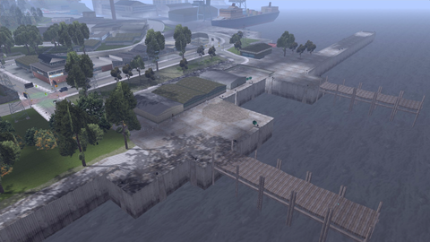
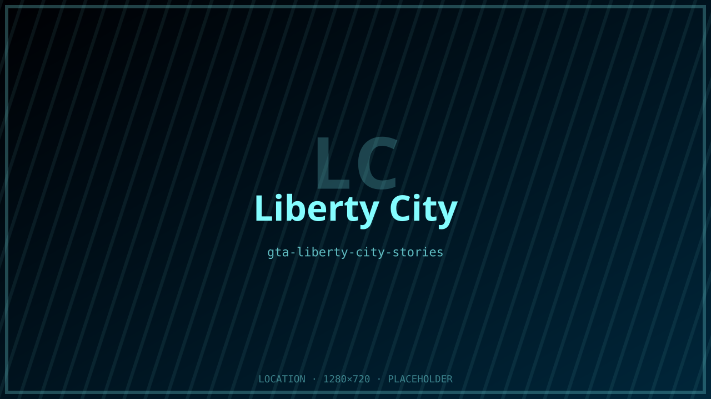

LCS · 10 records · coverage: partial
Locations — Grand Theft Auto: Liberty City Stories
Cities, districts and landmarks, with parent areas.
Download locations.json Whole game bundle
| Image | Location | Type | Parent area |
|---|---|---|---|
 | Atlantic Quays | District | Portland |
 | Belleville Park | District | Staunton Island |
 | Chinatown | District | Portland |
 | Liberty City | City | — |
 | Portland | Island | Liberty City |
 | Red Light District | District | Portland |
 | Saint Mark's | District | Portland |
 | Shoreside Vale | Island | Liberty City |
 | Staunton Island | Island | Liberty City |
 | Torrington | District | Staunton Island |
Field definitions
| Field | Type | Required | Notes |
|---|---|---|---|
name | string | yes | |
type | string | yes | one of: City, Borough, District, Neighbourhood, Town, Landmark, Interior, Island, Region, State |
parent | string | null | no | |
summary | string | no | |
image | string | null | no | |
verified | boolean | yes | |
source | string | no |